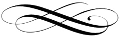

Милостивый государь Аристарх Петрович!
Не откроюсь Вам, кто пишет эти строки, – не по недостатку приязни, а из благоразумия, которое нынче нужно нам обоим в равной мере.
Знайте: дом Ваш и Вы сами – на примете у людей, что носят голубые мундиры, а иные из них ходят и вовсе без мундира. Наблюдение это не громкое, не следственное, но оттого не менее пристальное: примечается всякий гость, всякое письмо, всякая отлучка, кажущаяся неосторожному глазу подозрительной.
Посему прошу Вас, послушайте доброго совета: не беритесь ни за какое поручение, смысла коего доподлинно не знаете; не принимайте писем и свёртков от лиц малознакомых, сколь бы благовидным ни казался повод; не вступайте в сношения, что могут быть истолкованы как участие в делах, до Вас не касающихся. Одна неосторожность способна погубить не токмо Вас, но и тех, кто Вам всего дороже.
Простите скудость этого письма и отсутствие подписи под ним: поверьте, они продиктованы заботой, а не холодностью.
Без подписи.
✂ вырезать наклейку на конверт
Его Благородiю
Аристарху Петровичу
Горихвостову.
В N‑скій уѣздъ,
имѣніе Горихвостовка.
Милостивая государыня Аглая Петровна!
Не откроюсь Вам, кто пишет эти строки, – не по недостатку приязни, а из благоразумия, которое нынче нужно нам обоим в равной мере.
Знайте: дом Ваш и Вы сами – на примете у людей, что носят голубые мундиры, а иные из них ходят и вовсе без мундира. Наблюдение это не громкое, не следственное, но оттого не менее пристальное: примечается всякий гость, всякое письмо, всякая отлучка, кажущаяся неосторожному глазу подозрительной.
Посему прошу Вас, послушайте доброго совета: не беритесь ни за какое поручение, смысла коего доподлинно не знаете; не принимайте писем и свёртков от лиц малознакомых, сколь бы благовидным ни казался повод; не вступайте в сношения, что могут быть истолкованы как участие в делах, до Вас не касающихся. Одна неосторожность способна погубить не токмо Вас, но и тех, кто Вам всего дороже.
Простите скудость этого письма и отсутствие подписи под ним: поверьте, они продиктованы заботой, а не холодностью.
Без подписи.
✂ вырезать наклейку на конверт
Ея благородію
Аглаѣ Петровнѣ
Горихвостовой.
В N‑скій уѣздъ,
имѣніе Горихвостовка.